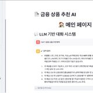
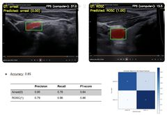

명지대학교 (Myongji University)
2020.03 – 재학중주전공: 정보통신공학과 · 연계전공: 인공지능 ICT 융합
- GPA 4.16 / 4.5 (전공 평점 4.15)
- 현재 졸업 유예 중 · 2027.02 졸업예정
노이즈 속에서 신뢰할 수 있는 신호를 복원하는 연구를 합니다.
DAN Lab, SMC MARS Lab, GIST IVL Lab을 거치며 딥러닝 기반 이미지 복원 연구 경험을 쌓아왔습니다.
저는 '꾸준함'과 '소신'을 가장 중요한 가치로 삼고 성장해왔습니다.
학창 시절에는 또래보다 속도가 느린 학생이었지만, 몇 배의 노력으로 그 격차를 좁히며 제대로 된 배움의 의미를 익혔습니다. 이 경험은 지금까지도 저를 움직이는 가장 큰 동력인 '노력'으로 이어집니다.
학부 과정에서는 졸업 요건을 넘어서는 초과 학점을 이수하며 부족한 역량을 스스로 채워왔고, 새로운 도전을 멈추지 않았습니다. 이러한 태도는 대학원 과정과 연구 현장에서도 동일한 밀도로 이어질 것이라 확신합니다.
제 관심 연구 분야는 아래와 같습니다: Image Restoration, SR Image Processing
주전공: 정보통신공학과 · 연계전공: 인공지능 ICT 융합
+ WE-IT 대학생 연합 동아리(2024.02–2025.02): 운영진(총무부장), 데이터 분석·머신러닝 스터디 진행
렛유인, 명지대 주관 · [팀장] 20, 30세대들을 위한 재테크 관리 매니저
기여도: 프로젝트 기획 및 데이터 전처리 및 VectorDB 구축, 프롬프트 개발.
20, 30 세대들의 재테크 방법에 대한 부족함과 금융 리터러시 향상을 통한 재테크 문맹 해소에 기여하고자 수행하게 되었습니다. 기존에 상품 추천 챗봇은 금융권에서 서비스 진행 중이기에 20, 30 세대들의 이목을 끌기 위해 MBTI를 활용하였으며, Langchain 기술과 OpenAI로 LLM의 답변에 신뢰성을 부여하였습니다.

SMC 응급의학과 주관 · [팀장] 심정지 환자에 대한 ROSC 진단 보조 시스템
기여도: 프로젝트 기획 및 Segmentation, Classification model 개발 및 통합 파이프라인 구축.
CPR Ultrasound video(image)를 통한 CAC 기반 Arrest vs ROSC Classification end-to-end 시스템으로, 임상에서 사용 가능한 arrest vs ROSC 진단 보조 시스템 구축을 목표로 수행했습니다. 전체 파이프라인은 Detection-Segmentation-Classification으로 구성되며, 각 단계에서 Yolov12n, SAM2.1-large, GRU를 활용하였습니다.

GIST 동계 인턴
Noise2Void, AP-BSN, C-BSN, LG-BPN 모델들을 활용하여 논문 모델 재현 및 CT 이미지에서의 구현(Implementation) 프로젝트를 수행했습니다.
| 학년도 | 학기 | 장학금명 | 비고 |
|---|---|---|---|
| 2024 | 1학기 | 융합인재장학금 | 인공지능·ICT융합 |
| 2024 | 1학기 | 특성화 교육훈련장학금 | ABI-X사업단 |
| 2024 | 2학기 | 모범장학금 1종 | 명지대학교 |
| 2024 | 2학기 | 융합인재장학금 | 인공지능·ICT융합 |
| 2024 | 2학기 | 특성화 교육훈련장학금 | AI·Bigdata·ICT융합교육사업단(ABI-X사업단) |
| 2025 | 1학기 | 모범장학금 1종 | 명지대학교 |
| 2025 | 1학기 | 학습훈련장학금 | – |
| 2025 | 2학기 | 경기RISE 장학금 | – |
채용·연구실 지원 및 협업 문의는 아래 채널로 편하게 연락 주세요.